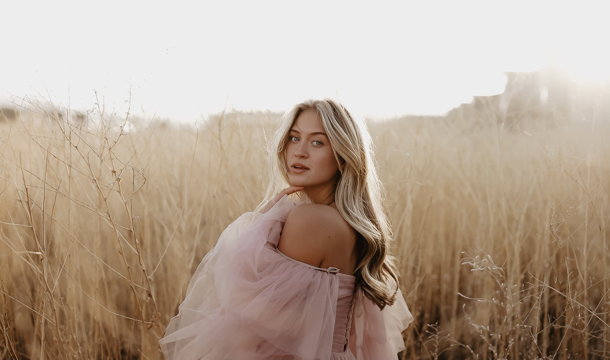

Good Things
A look into my mind:

- Gold light from a plane window reflecting on the opposite side
- How music sounds when you're underwater
- Birds flying next to your car at the same speed that you're driving
- Bikers waving when you drive past them
- A song playing on shuffle right after you think about it
- When the song ends right as you get home
- Fluffy honeybees on lavender
- Wildflowers
- Birds on peach trees
- Finding the perfect skipping rock
- Seeing the moon during the day
- Laying in freshly dried, clean laundry
- Tightly tucked bed sheeets
- Reading a book that somebody has already highlighted
- Showering after a long beach day
- When the air inside the car is warmer than the air outside, but you keep the windows down
- People that returned borrowed hair ties
- Parents putting shoes on their kids
- Banana bread
- Planes in the sky during sunset
- "Drive safe"
- Homemade bread
- My older brother always kisses the side of my head when he hugs me
- My youngest brother driving carefully and saying "bump" so I can do my makeup in the car
- The other youngest brother finishing his homework early so he can play Nertz with me on my birthday
- The random man facetiming his friend to show off his new haircut
- Fall trees with sun halos
- Watching someone take a picture of the sunset
- Walking on crunchy leaves
- Horses in jackets
- Charlie starting my car for me
- The sun saying "Good Morning" to the tops of mountains
- "He loves music like you love music"
- Old man putting his wife's wheelchair in the trunk
- When Dad adds my music to his playlists
- Magazines with pictures cut out
- Hearing someone play a song you showed them
- Snow under a street lamp
- Woohoo rock
- Blue stained glass on the Timpanogos temple
- First smell of freeshly cut grass after a long winter
- Tall buff guy touching the bushes as he walks by
My deepest, darkest secret:
Please don't let anyone see this. Ever